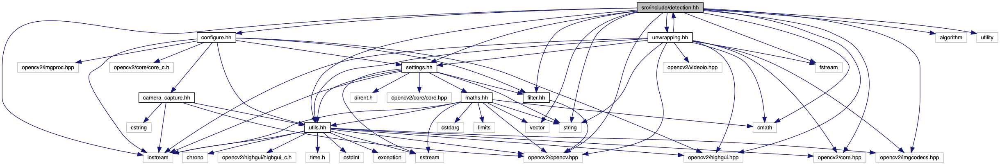

#include <tesseract/baseapi.h>#include <leptonica/allheaders.h>#include <utils.hh>#include <iostream>#include <fstream>#include <string>#include <cmath>#include <opencv2/highgui.hpp>#include <opencv2/core.hpp>#include <opencv2/opencv.hpp>#include <opencv2/imgcodecs.hpp>
Include dependency graph for detection.hh:

This graph shows which files directly or indirectly include this file:

Go to the source code of this file.
Functions | |
| int | detection () |
| Loads some images and detects shapes according to different colors. More... | |
| void | shape_detection (const Mat &img, const int color, const Mat &un_img) |
| Detect shapes inside the image according to the variable 'color'. More... | |
| void | erode_dilation (Mat &img, const int color) |
| It apply some filtering function for isolate the subject and remove the noise. More... | |
| void | find_contours (const Mat &img, Mat original, const int color) |
| Given an image, in black/white format, identify all the borders that delimit the shapes. More... | |
| int | number_recognition (Rect blob, const Mat &base) |
| Detect a number on an image inside a region of interest. More... | |
| void | save_convex_hull (const vector< vector< Point >> &contours, const int color, const vector< int > &victims) |
| Given some vector save it in a xml file. More... | |
| void | load_number_template () |
| Load some templates and save them in the global variable 'templates'. More... | |
| void | crop_number_section (Mat &processROI) |
| Given an image identify the region of interest(ROI) and crop it out. More... | |
Function Documentation
◆ crop_number_section()
| void crop_number_section | ( | Mat & | ROI | ) |
Given an image identify the region of interest(ROI) and crop it out.
- Parameters
-
[in,out] ROI Is the image that the function will going to elaborate.
◆ detection()
| int detection | ( | ) |
Loads some images and detects shapes according to different colors.
- Returns
- Return 0 if the function reach the end.
◆ erode_dilation()
| void erode_dilation | ( | Mat & | img, |
| const int | color | ||
| ) |
It apply some filtering function for isolate the subject and remove the noise.
An example of the sub functions called are: GaussianBlur, Erosion, Dilation and Threshold.
- Parameters
-
[in,out] img Is the image on which the function apply the filtering. [in] color Can has 4 value:
0 -> Red
1 -> Green
2 -> Blue
3 -> Black
According to the color the filtering functions apply can change in the type and in the order.
◆ find_contours()
| void find_contours | ( | const Mat & | img, |
| Mat | original, | ||
| const int | color | ||
| ) |
Given an image, in black/white format, identify all the borders that delimit the shapes.
- Parameters
-
[in] img Is an image in HSV format at the base of the elaboration process. [out] original Is the original source of 'img', it is used for showing the detected contours. [in] color Can has 3 value:
0 -> Red
1 -> Green
2 -> Blue
Is used for decid which procedure apply to the image.
◆ load_number_template()
| void load_number_template | ( | ) |
Load some templates and save them in the global variable 'templates'.
◆ number_recognition()
| int number_recognition | ( | Rect | blob, |
| const Mat & | base | ||
| ) |
Detect a number on an image inside a region of interest.
- Parameters
-
[in] blob Identify the region of interest inside the image 'base'. [in] base Is the image where the function will going to search the number.
- Returns
- The number recognise, '-1' otherwise.
◆ save_convex_hull()
| void save_convex_hull | ( | const vector< vector< Point >> & | contours, |
| const int | color, | ||
| const vector< int > & | victims | ||
| ) |
Given some vector save it in a xml file.
- Parameters
-
[in] contours Is a vector that is saved in a xml file. [in] color Is the parameter according to which the function decide if saved ('color==1') or not ('otherwise') the vector 'victims'. [in] victims Is a vector that is saved in a xml file.
◆ shape_detection()
| void shape_detection | ( | const Mat & | img, |
| const int | color, | ||
| const Mat & | un_img | ||
| ) |
Detect shapes inside the image according to the variable 'color'.
- Parameters
-
[in] img Image on which the research will done. [in] color Can has 3 value:
0 -> Red
1 -> Green
2 -> Blue
These color identify the possible spectrum that the function search on the image.